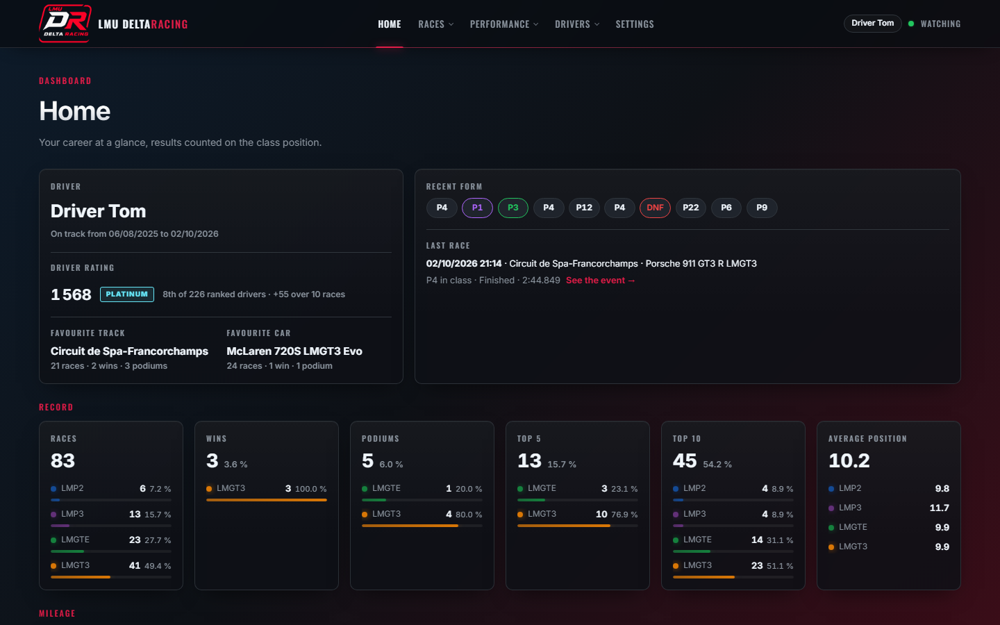
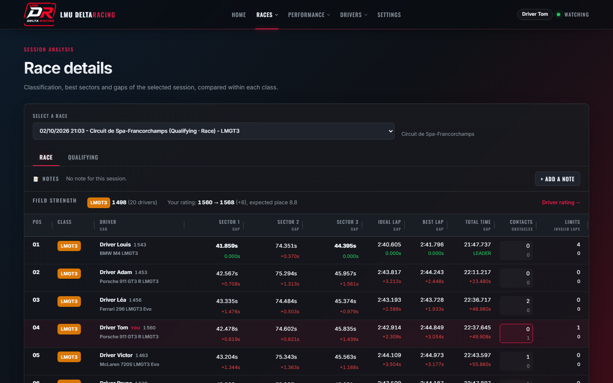
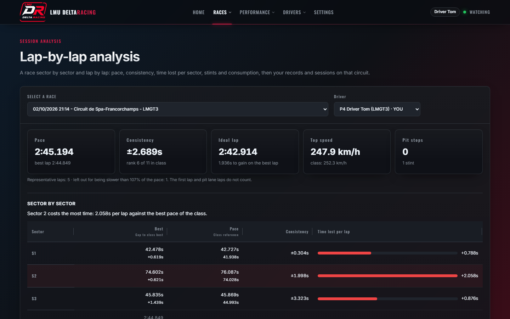
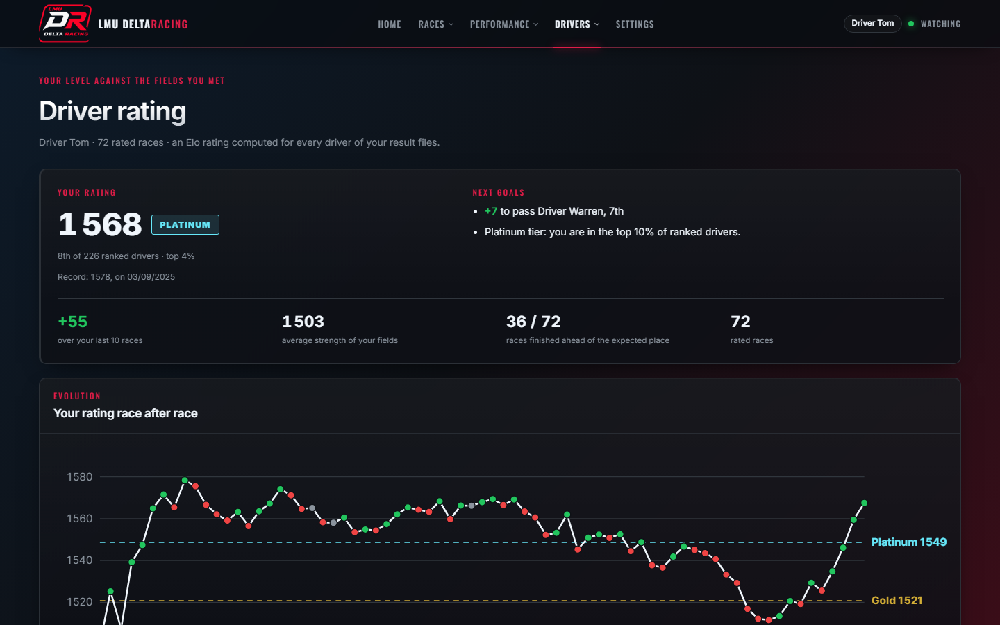

Track your progress in Le Mans Ultimate, race after race.
LMU DeltaRacing reads the result files saved by Le Mans Ultimate and turns them into a personal dashboard: best laps compared with your previous session, sector-by-sector classification, race story, lap-by-lap analysis, driving profile and driver rating.
Free and open source (GPL-3.0) · Windows 10 and 11, 64-bit · Interface in English, French, German, Italian and Spanish · Everything stays on your PC: no data is collected.

What it shows
- My races
Every race paired with its qualifying, circuit by circuit, with the gap to your previous session in the same class.
- Race details
Classification with best sectors, ideal lap and gaps within each class, contacts, track limits and the position chart of the race.
- Lap-by-lap analysis
Pace, consistency, time lost per sector, stints, fuel, virtual energy and tyre wear when the server shares them.
- Progress
Your best laps over time on each circuit, by week or month, per car or per class.
- Driving profile
Contacts, track limits and penalties, and what they cost you in time and positions.
- Driver rating
A multiplayer Elo rating of every driver you raced against, with your tier and next goals.
- Race notes
Write down conditions, car behaviour, setup and feeling for each session, then compare them with your times.
- Live watching
New results appear as soon as the game writes them, without restarting the app.
Screenshots



Get started
- Download the installer from the latest release and run it. Windows may warn about an unsigned installer: choose “More info”, then “Run anyway”.
- Launch LMU DeltaRacing: it finds the results folder of Le Mans Ultimate (
UserData\Log\Results) and opens the dashboard in your browser. - Race: each new session appears in the dashboard as soon as the game saves it.
Screenshots use anonymized sample results. LMU DeltaRacing is a fan project, not affiliated with Le Mans Ultimate or its publishers.